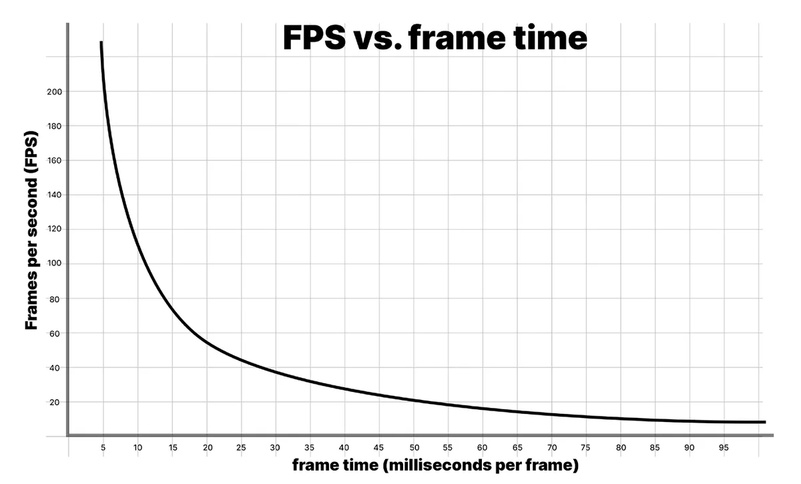
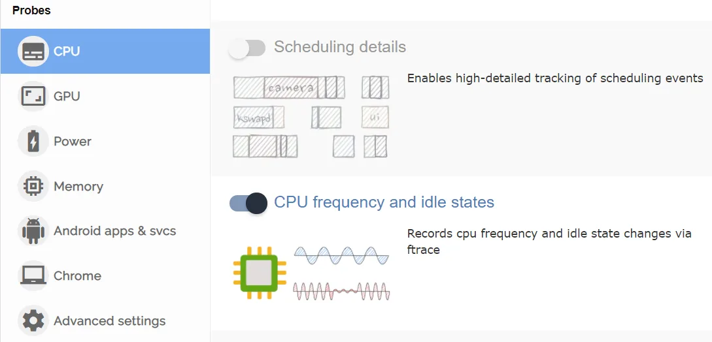

性能分析工作流
本节指出了在性能分析时一些有用的目标。它也考察了常见的性能瓶颈，例如受限于 CPU（CPU-bound）或受限于 GPU（GPU-bound），并详细说明了如何识别这些情况以及如何进一步深入调查。最后，本节深入探讨内存性能分析（memory profiling），它与运行时性能基本无关，但很重要，因为了解它可以避免游戏崩溃。
设定帧预算
用每秒帧数（fps，frames per second）来衡量游戏的帧率，并不适合为玩家提供一致的体验。考虑下面这个简化的场景：
在运行时，你的游戏在 0.75 秒内渲染了 59 帧。然而，下一帧却需要 0.25 秒才能渲染完成。平均交付帧率 60 fps 听起来不错，但实际上玩家会察觉到卡顿，因为最后一帧花了四分之一秒才渲染出来。
这就是为什么为每帧设定一个具体的时间预算很重要。它为你提供了一个明确的目标，供你在分析和优化游戏时努力达成，并最终帮助你为玩家创造更流畅、更一致的体验。
每一帧都会基于你的目标 fps 拥有一个时间预算。目标为 30 fps 的应用每帧耗时应当始终低于 33.33 ms（1000 ms / 30 fps）。同样，目标为 60 fps 则每帧只有 16.66 ms。
在非交互式的序列中你可以超出这个预算，例如显示 UI 菜单或加载场景时，但在游戏过程中不行。哪怕只有一帧超出了目标帧预算，也会造成卡顿。
VR 游戏中持续保持高帧率对于避免玩家产生晕眩或不适至关重要。否则，你的游戏可能会在认证阶段被平台持有者拒绝。
每秒帧数：一个具有误导性的指标
玩家衡量性能的常见方式是帧率，即每秒帧数。不过，建议你改用毫秒为单位的帧时间（frame time）。要理解其中的原因，请看下面这张 fps 与帧时间的对比图。

看看这些数字：
- 1000 ms/sec / 900 fps = 每帧 1.111 ms
- 1000 ms/sec / 450 fps = 每帧 2.222 ms
- 1000 ms/sec / 60 fps = 每帧 16.666 ms
- 1000 ms/sec / 56.25 fps = 每帧 17.777 ms
如果你的应用以 900 fps 运行，折算下来就是每帧 1.111 毫秒的帧时间。在 450 fps 时，则是每帧 2.222 毫秒。这表示每帧只相差 1.111 毫秒，尽管帧率看起来下降了一半。
如果你看看 60 fps 和 56.25 fps 之间的差异，折算下来分别是每帧 16.666 毫秒和每帧 17.777 毫秒。这同样表示每帧多出 1.111 毫秒，但在这里，帧率下降在百分比上让人感觉远没有那么剧烈。
这就是为什么开发者使用平均帧时间来衡量游戏速度，而不是 fps。
除非帧率低于你的目标帧率，否则不必为 fps 担心。把注意力放在帧时间上，用它衡量游戏运行的速度，然后让耗时保持在帧预算之内。
如需了解更多信息，请阅读原文《Robert Dunlop's fps versus frame time》。
移动平台的挑战：热控制与电池续航
在为移动设备开发应用时，热控制是最重要的优化领域之一。如果 CPU 或 GPU 因为低效的代码而长时间满负荷工作，这些芯片就会发热。为避免损坏芯片（以及可能烫伤玩家的手！），操作系统会降低设备的时钟频率使其降温，从而导致帧卡顿和糟糕的用户体验。这种性能下降被称为热降频（thermal throttling）。
更高的帧率和更多的代码执行（或 DRAM 访问操作）会导致电池耗电增加和发热加剧。糟糕的性能还可能让你彻底失去整个低端移动设备市场，从而错失市场机会。
在处理发热问题时，请把你可用的预算当作一个系统级预算来考虑。
通过尽早使用性能分析技术，从一开始就优化你的游戏，从而对抗热降频和电池耗电。针对目标平台的硬件调整项目设置，以对抗发热和耗电问题。
在移动平台上调整帧预算
为了在长时间游玩时对抗设备发热问题，通常的建议是留出约 35% 的帧空闲时间。这能让移动芯片有时间降温，并有助于防止过度耗电。以每帧 33.33 ms 的目标帧时间（对应 30 fps）来算，移动设备的典型帧预算大约是每帧 22 ms。
计算过程是这样的：(1000 ms / 30) * 0.65 = 21.66 ms
若要在移动平台上以同样的算法达到 60 fps，则需要 (1000 ms / 60) * 0.65 = 10.83 ms 的目标帧时间。这在许多移动设备上很难实现，而且耗电速度会是目标 30 fps 时的两倍。由于这些原因，大多数移动游戏以 30 fps 而不是 60 fps 为目标。使用 Application.targetFrameRate 来控制该设置，关于帧时间的更多细节请参阅“设定帧预算”一节。
移动芯片上的频率调节（frequency scaling）会让性能分析时很难确定帧空闲时间预算的分配情况。你的改进和优化可能会带来净正收益，但移动设备可能会降低频率，结果运行得更凉。使用 FTrace 或 Perfetto 之类的自定义工具，在优化前后监控移动芯片的频率、空闲时间和频率调节情况。
只要你保持在目标 fps 的总帧时间预算之内（30 fps 对应 33.33 ms），并且看到设备为维持该帧率而负载更轻或记录到更低的温度，那就说明你走在正确的路上。
在移动设备上为帧预算留出余量的另一个原因，是要考虑现实世界中的温度波动。在炎热的日子里，移动设备会变热并且难以散热，这可能导致热降频和糟糕的游戏性能。预留出帧预算的一定百分比，有助于避免这类情况。
减少内存访问操作
在移动设备上，DRAM 访问通常是耗电的操作。Arm 针对移动设备图形内容的优化建议指出，LPDDR4 内存访问的代价约为每字节 100 皮焦耳（picojoule）。
通过以下方式减少每帧的内存访问操作次数：
- 降低帧率
- 尽可能降低显示分辨率
- 使用更简单的网格，减少顶点数量和属性精度
- 使用纹理压缩和 mipmapping
当你需要重点关注采用 Arm 或 Arm Mali 硬件的设备时，Arm Mobile Studio 工具链（具体来说是 Streamline Performance Analyzer）包含一些非常出色的性能计数器，可用于识别内存带宽问题。这些计数器针对每一代 Arm GPU（例如 Mali-G78）都有列出和说明。请注意，Mobile Studio 的 GPU 性能分析需要 Arm Mali。

如需完整的移动平台优化指南，请参阅《Optimize Your Mobile Game Performance》。其中有许多技巧和窍门，可以帮助你减少热降频并延长运行你游戏的移动设备的电池续航。
从高层级到低层级进行性能分析
自顶向下的方法在性能分析时效果很好，先从禁用 Deep Profiling 开始。用这种高层级的方法收集数据，并记录哪些场景会导致不想要的托管内存分配（managed allocation），或者在你的核心游戏循环区域消耗了过多 CPU 时间。
你首先需要收集 GC.Alloc 标记的调用栈。如果你不熟悉这个过程，可以在本指南后面的“在应用生命周期内定位反复出现的内存分配”一节中找到一些提示和技巧。
如果报告的调用栈不够详细，无法追踪到分配或其他变慢问题的来源，那么你可以再进行一次性能分析会话，启用 Deep Profiling 来找出分配的来源。
在记录帧时间“元凶”时，务必记下它们相对于该帧其余部分的表现。这种相对影响在开启 Deep Profiling 后会发生变化。
关于深度性能分析的更多内容，请阅读本指南后面的部分。
尽早进行性能分析
性能分析能带来的最大收益，是在项目开发生命周期的早期就开始使用它。
尽早且频繁地进行性能分析，这样你和你的团队就能理解并记住项目的“性能特征”（performance signature）。如果性能突然变差，你就能轻松发现是哪里出了问题并加以修复。
最准确的性能分析结果，始终来自在目标设备上运行并分析构建版本，同时结合平台专用工具深入探究每个平台的硬件特性。这种组合将为你提供应用在所有目标设备上性能的整体视图。
建立用于基准测试的硬件层级
除了使用平台专用的性能分析工具之外，还要为每个平台以及你希望支持的每一档质量建立层级或最低规格设备，然后针对这些规格分别进行分析和优化。
举例来说，如果你的目标是移动平台，你可能会决定支持三个层级，并通过质量控制根据目标硬件开启或关闭某些功能。然后针对每个层级中最低规格的设备进行优化。再举一个例子，如果你正在为 PlayStation 4 和 PlayStation 5 同时开发游戏，请确保在两个平台上都进行性能分析。